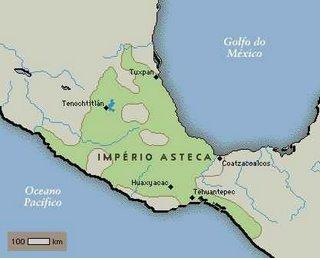
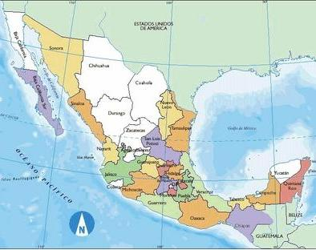
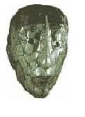
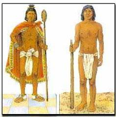
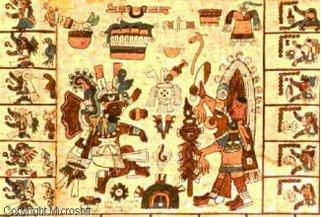
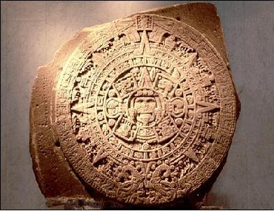
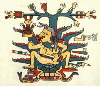
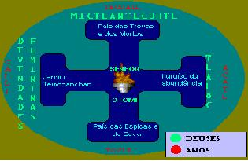
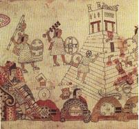
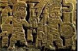

|
|
A Civiliza��o Asteca
por Mayara Rosa

A contagiante hist�ria de um povo que alcan�ou grandes conquistas
ao longo do seu Imp�rio, mas que foi surpreendido pelos espanh�is
ap�s os acolher em seu territ�rio.
As Origens
Os astecas dominaram a maior parte do M�xico at� serem
surpreendidos pelos espanh�is em 1519.
Este povo guerreiro
habitou a atual regi�o do M�xico entre os s�culos XIV e XVI. Fundaram a cidade de Tenochtitl�n (atual cidade
do M�xico), numa regi�o de p�ntanos pr�ximo ao lago Texcoco.
A
l�ngua e a religi�o deste povo foram impostas desde o Atl�ntico at�
o Mediterr�neo.
Em sua capital, Tenochtitl�n, a arquitetura e a
escultura alcan�aram uma extraordin�ria fase.
De inicio, os
astecas tiveram dificuldades com povos vizinhos, foram considerados
intrusos e semi-b�rbaros at� alcan�arem o auge de sua
Civiliza��o.
Os primeiros grupos astecas utilizaram armas de
pedra lascada para a ca�a e com seus conhecimentos, ainda
desenvolveram t�cnicas como as do Nilo em sua agricultura. No
cultivo eles valorizaram o milho, vagens, ab�bora, pimenta,
etc.
Diversos grupos resultaram no Imp�rio Asteca, dentre eles,
os Olmecas contribu�ram para a escrita hierogl�fica, as civiliza��es
cl�ssicas dominaram as pir�mides e constru��es de templos sagrados,
e ainda, muitos outros povos n�mades participaram do desenvolvimento
da hist�ria Asteca.
Como na hist�ria de outros povos, os astecas
tamb�m tiveram disputas em suas dinastias, como por exemplo, para
eleger um rei e igualar sua organiza��o � dos povos
vizinhos.
Em 1375, para religar sua dinastia, os astecas
entronizaram Acamapichtli, mas foi seu sucessor, Uitziliuitl que por
meio de alian�as matrimoniais importou algod�o. E p�de expandir o
com�rcio.
Depois de um per�odo de disputas, o quarto soberano
asteca aliou-se ao rei poeta Nezaualcoyolt e com a tr�plice alian�a,
tornaram suas civiliza��es no grande Imp�rio Asteca.
Mapa Atual : M�xico
O Imp�rio Asteca em 1519
Os soberanos tinham uma preocupa��o: estender a hegemonia
da tr�plice alian�a � novos territ�rios e, somente em 1472 esse
objetivo foi alcan�ado com a morte de Zezaualcoyolt, um dos
principais obst�culos para essa conquista, assim a hegemonia se
foi.
A partir de ent�o ocorreram
muitas disputas, dentre elas, rebeli�es para n�o pagar impostos,
ren�ncias pol�ticas, lutas militares, outras tamb�m relacionadas �s
conquistas de reinados.
A Civiliza��o Asteca foi t�o populosa
que, temos por meio de documentos ind�genas, registros de 38
prov�ncias em 1519.
Dependendo da mercadoria que forneciam tanto
no com�rcio ou agricultura, era obrigat�rio pagar tributos de uma a
quatro vezes por
ano.
Os produtos arrecadados eram armazenados no pal�cio Imperial,
quem controlava a contabilidade deste local eram os escribas. A
administra��o asteca era exata e soberana. Se houvesse desvios de
mercadorias e ouro, o indiv�duo era punido � morte e seus bens eram
confiscados.
O tributo n�o era dirigido apenas �s necessidades do
povo, pagamentos de funcion�rios ou artes�os, ao abastecimento do
santu�rio ou do ex�rcito, mas tamb�m para suprir o soberano.
At�
a regi�o ocupada pelos astecas ser ocupada pelos espanh�is, havia um
grande com�rcio, pequenos estados com diversos tipos de l�ngua e
etnias, por�m estes eram avassalados pelo poderio militar.
A Sociedade e o Governo
No vale do M�xico, a tribo asteca apresentava-se como sociedade
homog�nea, igualit�ria e guerreira. Para os astecas, os imperadores
foram as autoridades de maior import�ncia e tinham os cargos mais
destacados.
Os sacerdotes eram considerados pela popula��o as principais
autoridades.
Os cidad�os (maceualtin) deviam pagar impostos, prestar servi�os
coletivos e adentrar ao servi�o militar. Em compensa��o, ao atingir
a maioridade (20 a 25 anos) poderiam casar-se e receber um terreno
para moradia e cultivo. Seus filhos tinham o direito da educa��o, e
em per�odos de escassez, recebiam mantimentos. Para o servi�o
sacerdotal, ambos os sexos podiam participar. Com estas abordagens
esperava-se que todos tivessem uma melhor posi��o na sociedade.
Os escravos tamb�m fizeram parte desta sociedade, eles eram
prisioneiros de guerra ou pessoas endividadas sem a possibilidade de
quitar suas d�vidas. Eles poderiam ser libertos com alforrias ou com
o pagamento de suas pend�ncias. Suas mulheres e filhos n�o eram
necessariamente escravos.
A sociedade era composta tamb�m por
artes�os, negociantes e dignit�rios (senhores com altas fun��es
civis ou militares).
O poder militar, pol�tico e econ�mico do
conjunto Imperial estava concentrado nas m�os do soberano asteca,
dos dignit�rios e do grande conselho.
A Vida Cotidiana
Os astecas desenvolveram suas habilidades para alcan�arem boas
condi��es no modo de vida.
Da ca�a at� a pesca, evolu�ram-se com
muitos meios de produ��o e com�rcio, como por exemplo, a constru��o
de aquedutos para abastecer a popula��o com �gua.
A higiene da cidade era responsabilidade de equipes de
trabalhadores, estes tamb�m cuidavam da manuten��o dos canais.
As
constru��es e a organiza��o das cidades eram not�veis.
No que se
refere � alimenta��o, havia tr�s refei��es ao dia e comiam-se muitos
derivados do milho e outros produtos colhidos. Como bebida, os
dignit�rios tomavam no t�rmino das refei��es o cacau, esta bebida
era muito cara na �poca e causava efeitos alucin�genos (esse fato
levava muitos a pensarem ter tido vis�es, o que na verdade era
somente uma "embriaguez").
As vestimentas restringia-se � tangas
para homens, corpete e saias para mulheres e para os militares
t�nicas de algod�o ajustadas e costuradas. As cores das roupas eram
divididas pelas fun��es exercidas por seus usu�rios, como por
exemplo, o Imperador que utilizava um manto turquesa. Al�m de
colares e sand�lias como utens�lios, havia tamb�m a perfura��o do
septo nasal e do l�bio inferior com metais ou j�ias.
Os astecas
gostavam muito de jogos, seja de uma simples ca�a a p�ssaros ou
jogos de azar, como, por exemplo, um jogo esot�rico onde duas
equipes disputavam com uma bola quem atravessaria um dos dois an�is
pendurados na parede, muitos apostavam e at� se tornavam escravos
devido ao jogo.
Os Conhecimentos
Os astecas tinham t�cnicas que pressup�e seu amplo conhecimento,
como na agricultura, na tecelagem, no
desenvolvimento da cer�mica, na arquitetura (pir�mides), na
metalurgia do cobre e do ouro, da prata e do bronze.
O
conhecimento deste povo era not�vel.
Contemplavam o c�u e
estudavam o movimento dos astros.
Dominavam tamb�m a aritm�tica,
possu�am hier�glifos, cronologia e a escrita, onde havia o
compromisso entre a ideografia e a nota��o fon�tica.
Entendiam
tamb�m sobre a fauna e a flora de seu pa�s e utilizavam plantas como
rem�dios e t�cnicas m�sticas.
Este povo tinha um calend�rio
solar, o mais valorizado e tamb�m, o calend�rio divinat�rio.
O Calend�rio Solar
No Calend�rio Solar se encontram representadas a cosmogonia e a cronologia dos antigos
mexicanos.Ao centro destaca-se o Sol (Deus Tonatiuh) sedento de
sangue com o signo nauiollin, s�mbolo do nosso universo. Os quatro
bra�os da Cruz de Santo Andr�, correspondentes ao signo Ollin,
cont�m os s�mbolos dos quatro antigos S�is. Em torno destes
hier�glifos, c�rculos conc�ntricos mostram os signos dos dias (vide
abaixo), os anos, representados pelo glifo xiuitl composto de 5
pontos, sendo 4 em cruz e mais outro no meio e, enfim, duas
"serpentes de turquesa", isto �, os dois per�odos de 52 anos que
correspondem aos 65 anos do planeta V�nus, os dois constituindo o
ciclo de 104 anos denominado ueuetiliztli ("velhice").
Os astecas
tinham conhecimentos precisos sobre a dura��o do ano, a determina��o
dos solst�cios, as fases e eclipses da Lua, a revolu��o do planeta
V�nus e diversas constela��es, como as Pl�iades e a Grande Ursa.
Eles atribu�am uma aten��o especial � mensura��o do tempo, numa
aritm�tica que tinha como base o n�mero 20.
Ao fim de cada
per�odo de 52 anos, acendia-se o "Fogo Novo" no cimo da montanha de
Uixachtecatl. Isto era denominado "liga dos anos". Era comemorado
como um verdadeiro "Reveillon" m�stico com sacrif�cios, dan�as,
renova��o de utens�lio dom�sticos, etc.
O Calend�rio Asteca
possu�a 18 meses com 20 dias, estes �ltimos a saber:
|
Coatl
|
Cobra |
|
Cuetzpallin
|
Leopardo |
|
Calli
|
Casa |
|
Ehecatl
|
Vento |
|
Cipactli
|
Crocodilo |
|
Xochitl
|
Flor |
|
Quiahuitl
|
Chuva |
|
Tecpatl
|
Pedra |
|
Ollin
|
Tempo |
|
Cozcacuauhtli
|
Abutre |
|
Cuauhtle
|
�guia |
|
Ocelotl
|
Jaguar |
|
Acatl
|
Bast�o |
|
Malinalli
|
Erva |
|
Ozomatli
|
Macaco |
|
Itzquintli
|
C�o
Careca |
|
Atl
|
�gua |
|
Tochtli
|
Coelho |
|
Mazatl
|
Cervo |
|
Miquiztli
|
Caveira |
A fam�lia
Os mexicanos (assim chamados por habitarem uma regi�o do M�xico),
j� estavam destinados desde seu nascimento.
Sua data de
nascimento diria qual signo regeria a vida do indiv�duo, quando
crian�a � colocado � educa��o de seus pais e depois, dirigido �
escolas p�blicas. A partir dos 21 anos quando poderia casar-se, o
homem tinha o direito de ter mais que uma esposa, sendo que somente
o filho da primeira o sucederia.
O div�rcio era permitido e,
tamb�m o direito de um segundo casamento.
Caso uma mulher gr�vida
morresse, esta logo deveria ser enterrada antes que os guerreiros
disputassem com sua fam�lia por partes de seu corpo que, para eles
numa guerra servia como amuletos de sorte.
Quando um cidad�o
falecia, raramente era enterrado, pois havia o costume de
incinera��o.
O local de vida ap�s a morte dependia de como o
asteca faleceu.
A Religi�o
A religi�o asteca era muito rica.
Diversas divindades eram
cultuadas e, cada deus estava ligado a um fator que beneficiava seu
adorador, como por exemplo, Quetzalcoatl com o poder de
ressurrei��o, Tlazolteotl a deusa do amor, Tlaloc o deus da chuva e
do trov�o, entre e outros.
Mayahuel � a deusa da fertilidade
exuberante e da opul�ncia relacionada com a plenitude vital que
ressalta e amplifica a vida, tanto humana como a agr�cola,
considerada a Deusa da Planta do Maguey, este arqu�tipo de m�e tinha
quatrocentos seios, o que simbolizava o seu poder nutritivo. Foi
transformada em Maguey por causa de sua fertilidade, do poder que
tinha de reproduzir e aumentar a vida.
Sua principal
imagem ou elemento iconogr�fico � a planta Maguey em plena
infloresc�ncia. Na maioria de suas imagens a deusa est� dentro da
planta ou ao lado dela. (figura)
Deuses de outras culturas long�nquas eram tamb�m adotados pelos
astecas, sendo que os deuses tinham la�os familiares entre
si.
Acreditavam que a forma��o do universo e da humanidade
originara-se de diversos conflitos
que os deuses enfrentaram para demonstrar poder ou por
intrigas.
Os antigos mexicanos acreditavam que o mundo fosse uma
esp�cie de cruz-de-malta. Ao Norte, o "pa�s das trevas" (morada
subterr�nea dos mortos) reinava Mictlantecuhtli (o Plut�o dos
Astecas). Ao Leste, o para�so da abund�ncia tropical reinava Tlaloc.
Ao Sul, o "pa�s das espigas" e da seca. A Oeste, o "Jardim
Tamoanchan" e as divindades femininas.
No Centro, enfim,
morava o deus do fogo. Os anos eram repartidos entre os 4 pontos
cardeais: acatl(leste), tecpatl(norte), calli(oeste) e
tochli(sul).
Eram oferecidos sacrif�cios aos
deuses, sendo que algumas pessoas mesmo sabendo de como eram
r�gidos, se ofereciam como oferenda. Uma vez ao ano mo�as e rapazes
perfeitos para serem oferecidos, respectivamente, � deusas mulheres
e ao deus Tezcatlipoca.
Cada m�s regia um ritual, os rituais
deveriam ser realizados com obedi�ncia aos m�nimos detalhes e,
aquele que n�o o realizasse de forma correta era severamente punido.
Cada monast�rio da cidade destacava um pensamento teol�gico.
Nezaualcoyotl ordenou a constru��o de um templo onde deveria ter um
deus sem face, �aquele a quem devemos gra�as por viver�.
A Vida Art�stica
As artes astecas foram esplendidas, assim que se v� uma podemos
dizer sua autoria.
A arquitetura demonstra o grande grau de
cultura deste povo. As esculturas resgatavam m�scaras em
representa��es perfeitas. Conforme os registros hist�ricos, os
monumentos foram destru�dos em 1521 quando a cidade foi
sitiada.
Representa��es de animais, deuses, etc, foram
corretamente manuseados em est�tuas, pinturas e em mosaicos.
Na
literatura, havia poemas �picos, m�ticos e hist�ricos. Na l�rica
tratava-se da beleza da vida, do mundo, das flores e da inevit�vel
morte. Os poemas religiosos eram arcaicos e carregados de met�foras,
estes textos eram escritos em manuscritos para refor�ar a mem�ria e,
hoje, nosso conhecimento sobre esta civiliza��o.
Frequentemente
eram praticadas dan�as p�blicas e privadas. Normalmente eram
realizadas ap�s o p�r-do-sol, no interior das casas e, em
resid�ncias ricas. As dan�as personificavam alguns personagens
hist�ricos ou m�ticos, havendo tamb�m o uso de fantasias.
A Queda do Imp�rio Asteca
Com as expedi��es espanholas, Crist�v�o Colombo em 1492 estava
certo de ter encontrado a �sia rica em ouro.
Algumas expedi��es
passaram despercebidas pela Civiliza��o Asteca e seguiram para
outros lugares da Am�rica.
Cada vez mais os espanh�is chegavam
perto dos mexicanos, at� que em 1517, uma expedi��o sob o comando de
Francisco Hernandez de C�rdoba conheceu os Maias.
A partir da�,
outros navios vieram ao esperado contato com uma civiliza��o cheia
de benef�cios a serem dominados: a Civiliza��o Asteca.
Quando
Hern�n Cortez com onze embarca��es chegou ao M�xico, encontrou uma
nativa e teve um filho com ela, o primeiro mesti�o a desempenhar um
papel importante na hist�ria do M�xico.
Com a ajuda de sua
mulher, Cortez p�de conhecer os costumes dos astecas, analisando
cada detalhe para encontrar uma forma de derrot�-los. At� que um
dia, Cortez conheceu povos inimigos submetidos ao M�xico, estes se
aliaram aos espanh�is e assim uma guerra estava para come�ar.
Com
soldados em cavalos, mais preparados e melhor armados, os espanh�is
saquearam os astecas sem a menor piedade e, como os mexicanos n�o
guerreavam para destruir, mas para fazer prisioneiros, n�o tiveram
chance contra os guerreiros espanh�is, pois contavam s� com escudos,
lan�as e poucos conhecimentos de guerra comparado aos que o inimigo
dispunha.
Ap�s guerras, epidemias e doen�as trazidas de outros
territ�rios, o ex�rcito de Cortez exterminou o grande, por�m fr�gil
Imp�rio que havia dominado aquele territ�rio por noventa e tr�s
anos, desde as m�os de Itzcoatl at� a rendi��o de Cuauhtemotzin
diante a derrota.
Linha do Tempo Asteca :
Os Astecas (1325 at� 1521) foram uma civiliza��o
mesoamericana, pr�-colombiana, que floresceu principalmente entre os
s�culos XIV e XVI, no territ�rio correspondente ao atual
M�xico.
Seus principais acontecimentos foram:
� S�culo XIII - Migraram para o vale do M�xico (ou Anahu�c)
e assentaram-se, inicialmente, na maior ilha do lago de Texcoco;
� S�culo XV � Os Astecas formaram uma alian�a com duas
outras cidades,Texcoco e Tlacop�n contra Atzcapotzalco,
derrotaram-no e continuaram a conquistar outras cidades do vale do
M�xico. Controlavam todo o centro do M�xico como um Imp�rio Asteca,
cuja base econ�mico-pol�tica era o modo de produ��o tribut�rio;
� S�culo XVI - seus dom�nios se estendiam de costa a
costa, tendo ao norte os desertos e ao sul o territ�rio maia.
� S�culo XVI - Sua civiliza��o teve um fim abrupto com a
chegada dos espanh�is (1521).
|
|